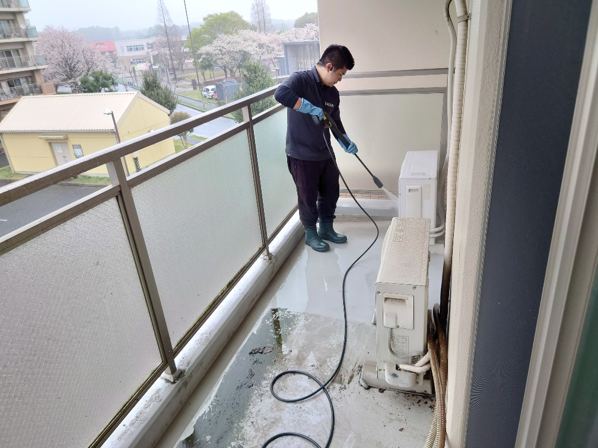
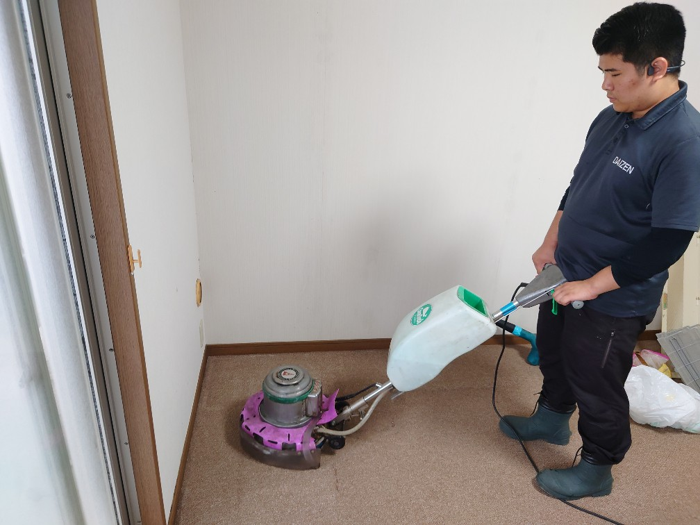
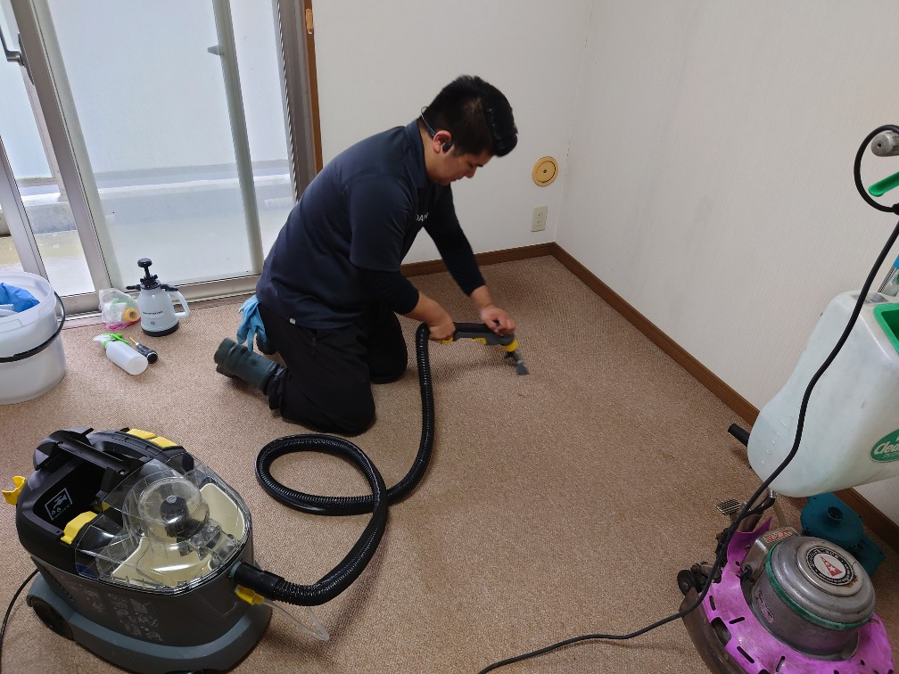

2023年3月28日 千葉県N様 居室カーペットクリーニングとエアコンクリーニングに併せてベランダクリーニングをしました!    千葉県のN様居室のカーペットクリーニングは、ドイツ製専用薬剤（汚れをカプセル化して閉じ込め除去する）と同じくドイツ製専用カーペットリンサー機器でカーペットの裏側に染み込んだ堆積汚れを根こそぎ吸い出すプロフェッショナルクリーニングで綺麗にしました。ターゲットの居室に有るエアコンも同時に内部洗浄クリーニングをしました。一緒に実施すると別々に実施するよりもずっと早く作業が完了します。ベランダでエアコンの内部パーツなどを洗浄して、室外機の高圧洗浄も実施することから、併せてベランダクリーニングをおまとめ特別価格で一緒に実施しました。この様にカーペット、エアコン、ベランダをひとまとめに一気にクリーニングすると料金もお得で、作業仕上げ時間も素早く、何よりもまとめて全て綺麗になってとても気持ち良いですよ!ぜひご検討ください、宜しくお願いいたします!